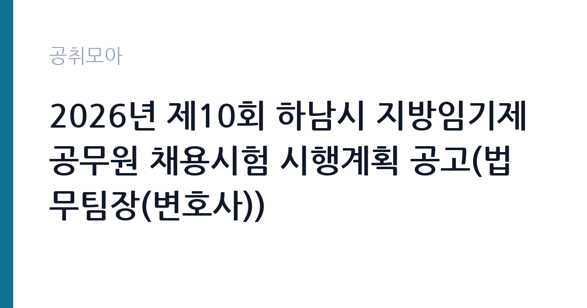

[지자체] 2026년 제10회 하남시 지방임기제공무원 채용시험 시행계획 공고(법무팀장(변호사))
경기도 하남시 · 경기 · 마감 2026-11-06 (D-9) · 출처 나라일터

한눈에 보는 모집 조건
| 기관 | 경기도 하남시 |
|---|---|
| 공고명 | 2026년 제10회 하남시 지방임기제공무원 채용시험 시행계획 공고(법무팀장(변호사)) |
| 고용형태 | 임기제 |
| 근무지 | 경기 |
| 게시일 | 2026-10-28 |
| 마감일 | 2026-11-06 (D-9) |
지원자격, 이렇게 읽으세요
- 지방행정6급(일반임기제) 1명
- 접수 ~2026-11-06 마감
- 세부 조건은 원문 공고문 확인
임기제공무원은 공무원 신분이지만 임용 기간이 정해져 있습니다. 전문성이 필요한 업무에 채용되며 임용 기간과 연봉등급이 공고문에 명시됩니다. 임기 중에는 공무원으로서의 복무 규정과 이해충돌 방지 의무가 적용됩니다. 이번 공고는 경기도 하남시가 직접 진행하는 자체 전형입니다. 법무 직무는 변호사 자격이 필수입니다. 대한변호사협회 등록 여부와 개업 상태를 확인하며, 일부 공고는 특정 분야 경력 연수를 요구합니다. 일반임기제공무원으로 채용되면 임용 기간과 연봉등급이 정해지고, 계약직이면 근로계약 기간이 명시됩니다. 사내변호사 형태는 정규직 채용으로 수습 기간이 설정되기도 합니다. 겸직 제한과 이해충돌 방지 관련 규정을 확인해야 합니다. 응시 자격 판단이 애매하면 접수 전에 채용 담당 부서로 문의하는 편이 안전합니다. 동일 직무 경력자와 경쟁하게 되므로, 관련 경험이 있다면 증명서에 업무 내용이 구체적으로 적히도록 요청하십시오. 자격증은 유효 기간과 등록 상태를 확인해야 합니다. 갱신이 필요한 자격이라면 갱신 여부를 먼저 점검하십시오.
이 공고의 포인트
이 건은 경기도 하남시가 같은 시기에 낸 3개 모집분야 가운데 법무 직무입니다. 다른 직무 공고와 요건이 다르므로 지원 전에 모집분야 표를 대조해야 합니다. 이 공고의 첫 번째 포인트는 고용 형태입니다. 임용 기간이 정해져 있지만 공무원 신분으로 복무 규정이 적용되고, 전문성이 인정되면 재임용이나 유사 직위 지원에 도움이 됩니다. 두 번째는 업무 범위가 명확하다는 점입니다. 법무 직무로 채용되므로 배치 이후 담당 업무가 크게 흔들리지 않습니다. 세 번째는 근무지입니다. 경기 지역 근무로 접근성은 좋지만 그만큼 지원자가 몰리는 지역이므로 경쟁률을 넉넉히 잡아야 합니다. 처우와 근무 형태가 표로 정리되어 있어 비교해 보기에 편한 공고입니다. 다만 선발 인원이 1명으로 많지 않아 자격을 갖춘 지원자가 몰리면 경쟁률이 높아질 수 있습니다.
전형은 어떻게 진행되나
서류전형과 면접전형 외에 직무수행능력 평가가 붙는 경우가 있습니다. 평가 방식은 공고문에 구체적으로 적혀 있으므로 어떤 항목에 배점이 높은지 먼저 파악하십시오. 면접에서는 지원 동기보다 실제 업무 경험에 대한 질문이 많고, 답변의 구체성이 평가를 가릅니다. 전형 일정은 서류 마감 이후 빠르게 진행되므로 연락 가능한 번호를 정확히 기재하고 문자와 메일을 수시로 확인해야 합니다. 최종 단계에서는 결격사유 조회와 신체검사가 진행됩니다. 서류 단계에서 요건을 충족하지 못하면 이후 전형을 준비할 기회가 없으므로, 제출 전 요건 대조를 한 번 더 하는 것이 좋습니다.
원문에서 확인한 전형 방식
하남시 지방임기제공무원 채용시험 시행계획을 다음과 같이 공고하오니 유능한 인재들의 많은 응시를 바랍니다. ○ 모집분야: 법무팀장(변호사) 1명 ○ 선발직급 : 공고문 참고 ○ 고용형태 : 임기제 ○ 자격요건 : 공고문 참고 ○ 접수기간 : 2026년 11월 4일(수) ~ 2026년 11월 6일(금)[3일간] ○ 응시방법 : 직접, 우편 ○ 문의처 : 하남시청 인사팀(☎031-790-5382)
이런 분께 추천해요
- 변호사 자격을 보유하고 등록 요건을 충족하는 분
- 해당 분야 소송·자문 경력이 있는 분
- 공공기관 이해충돌 규정을 준수할 수 있는 분
지원 전 체크리스트
- 응시자격 요건과 경력 기준을 충족하는가 — 경력은 증명서로 입증해야 합니다
- 임용 기간과 연봉등급, 근무 시간 조건을 확인했는가
- 제출서류 목록을 모두 준비했는가 — 누락 시 서류 단계에서 탈락합니다
- 접수 마감 2026-11-06 이전에 접수 방식을 확인해 제출했는가
모집 일정과 제출 타이밍
접수 마감은 2026-11-06이고 공고는 2026-10-28에 게시되었습니다. 준비 기간 9일 안에 서류 작성, 증빙 발급, 접수를 모두 마쳐야 하므로 주말을 포함해 일정을 미리 나누는 것이 좋습니다. 특히 경력 기술서나 직무수행계획서를 요구하는 공고는 작성에 시간이 걸리므로 첫날 초안을 잡으십시오. 서류 합격자 발표와 면접 사이 간격이 짧은 경우가 많아 면접 예상 질문은 서류 제출 전에 정리해 두는 편이 유리합니다. 마감 직전에는 접속이 몰리므로 여유를 두고 제출하십시오. 공휴일이 끼어 있으면 증명서 발급이 늦어질 수 있으니 발급 일정을 앞당기십시오.
직무 이해하기: 지자체
지방자치단체는 지역 행정과 복지, 시설 운영을 담당합니다. 부서별로 사업을 수행하고 결원이나 신규 사업에 따라 임기제와 기간제 인력을 채용합니다. 조례와 자체 인사 규정에 따라 채용 절차가 진행됩니다. 법무 업무는 기관의 소송과 계약, 규정 해석을 지원하는 일입니다. 소송 사건의 진행 상황을 관리하고 준비서면 초안을 작성하며 외부 대리인과 협의합니다. 계약서 검토와 법령 해석 질의 응답, 내부 규정 정비도 주요 업무입니다. 최근에는 개인정보와 국제거래, 투자 분쟁처럼 전문 분야가 세분화되어 해당 분야 경력을 요구하는 공고가 늘었습니다. 기관 성격에 따라 자문 중심과 소송 중심으로 업무 비중이 갈립니다. 이 직무는 담당 구역이 정해져 있어 근무지에 따라 실제 업무 환경이 달라집니다. 업무 강도와 근무 시간대는 부서 배치에 따라 달라지므로 면접에서 확인하는 것이 가장 정확합니다. 이 건의 근무 대상 지역·부서는 원문 기준 '법무팀장(변호사'입니다 원문에 '(변호사) 1명 ○ 선발직급 : 공고문 참고 ○ 고용형태 : 임기제 ○ 자격요건 : 공고문 참고 ○ 접수기간 : 2026년 11월 4일(수) ~ 2026년 11월 6'라는 조건이 명시되어 있습니다.
자기소개서 작성 팁
법무 지원서는 수행 사건과 계약 검토 실적을 중심으로 구성하십시오. 사건 유형, 본인이 맡은 역할, 결과를 구체적으로 쓰고 지원 기관의 업무와 연결되는 분야를 강조하십시오. 정책이나 제도 개선에 기여한 경험이 있다면 차별화 요소가 됩니다. 공직 수행에 필요한 이해충돌 관리 의식을 한 문단 넣으면 신뢰를 줍니다. 문항별 글자 수 제한을 먼저 확인하고, 각 문항의 첫 문장에 결론을 배치하는 방식이 읽기 쉽습니다. 지원 동기는 기관의 어떤 사업에 기여하겠다는 한 문장으로 시작하고, 이어서 본인의 경험을 근거로 붙이십시오. 감점을 피하려면 다른 기관에 보낼 수 있는 범용 문장을 그대로 쓰지 않는 것이 중요합니다. 기관 이름과 사업명이 문장 안에 자연스럽게 들어가야 준비도가 드러납니다.
면접 준비 포인트
면접에서는 실제 사건 처리 경험과 법적 판단 능력을 확인합니다. 복잡한 법률관계를 정리해 결론을 도출한 사례를 요구하며, 기관 업무와 관련된 분야의 이해도를 봅니다. 이해충돌 상황에서 어떻게 판단할지 묻는 질문도 나옵니다. 답변은 결론과 근거 법리를 함께 제시하는 방식이 효과적입니다. 면접은 공고문에 적힌 직무 내용을 얼마나 이해하고 있는지 확인하는 질문으로 시작하는 경우가 많으니, 모집분야 문구를 그대로 읽어 두는 것이 도움이 됩니다. 모르는 질문에 추측으로 답하면 감점 요인이 되므로, 확인 후 답하겠다고 밝히는 편이 안전합니다.
급여·근무조건 읽는 법
경기도 하남시의 구체적인 보수 수치는 이 공고 원문의 처우 항목과 보수표에서 확인해야 합니다. 공시 자료로 확인되지 않은 금액은 이 글에서 추정해 제시하지 않습니다. 알리오 2025년 결산 공시 기준 공공기관 전체 일반정규직 1인당 평균보수는 7,376만 9천원, 신입사원 평균초임은 4,031만 6천원입니다(무기계약직 미포함). 법무 직무의 보수는 채용 형태에 따라 구조가 다릅니다. 일반임기제공무원은 연봉등급제가 적용되어 등급별 상한액과 하한액 범위에서 연봉이 정해지고 임용 기간이 함께 명시됩니다. 사내변호사 형태의 정규직은 기관 임금체계와 성과급 규정을 적용받습니다. 계약직은 연봉 총액과 계약 기간이 개별로 정해지므로 총 보상 규모를 따져야 합니다. 구체적인 금액은 공고문의 보수 항목에서 확인하십시오. 2026년 적용 최저임금은 시급 10,320원, 월 환산 2,156,880원(주 40시간·209시간 기준)입니다. 고용노동부 고시 제2025-47호로 확정된 금액입니다. 공고문에 금액이 제시되지 않은 항목은 원문 보수표나 처우 설명에서 확인해야 하며 확인되지 않은 수치는 쓰지 않는 것이 원칙입니다. 비교할 때는 월 급여뿐 아니라 상여·명절휴가비·복지포인트·초과근무수당까지 포함한 연간 총액으로 계산하십시오. 기간제라면 계약 기간 동안의 총액을, 무기계약이라면 호봉 상승과 정년까지의 누적 소득을 기준으로 판단하는 편이 정확합니다.
자주 묻는 질문
- 선발 인원은 몇 명인가요?
공고문 기준 1명입니다. 직종별로 인원이 나뉘는 경우가 있으니 모집분야 항목을 함께 확인하십시오. - 근무지는 어디인가요?
경기 지역의 경기도 하남시 소속 근무지입니다. 세부 주소와 출퇴근 조건은 원문 공고문에서 확인할 수 있습니다. - 보수는 얼마인가요?
채용 신분(임기제공무원)과 기관 임금 규정에 따라 정해지며 구체적인 금액은 공고문 처우 항목에 제시됩니다. 금액이 공개되지 않은 경우에는 원문의 보수표를 확인하십시오.
함께 보면 좋은 공고
[지자체] 청도군 보건소장(개방형직위) 임용시험 계획 변경공고 — 마감 2026-11-13[지자체] 2026년 제2회 청도군 임기제공무원(농기계관리) 임용시험 계획 공고 — 마감 2026-11-11[지자체] 2026년 제3회 화천군 지방공무원 경력경쟁 임용시험 재공고 — 마감 2026-11-02출처: 나라일터 공개정보를 바탕으로 공취모아가 정리한 안내글입니다. 모집 조건·일정은 변경될 수 있으니 지원 전 반드시 원문 공고문을 확인하세요. 본 글은 정보 제공용이며 합격을 보장하지 않습니다.